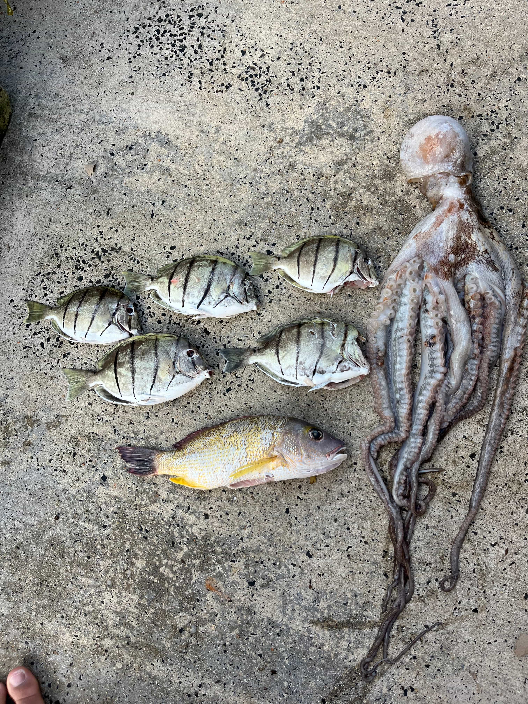

Bodyboarding
Bodyboarding is a great way to learn how to ride and maneuver the wave. It is beginner-friendly and helps you understand ocean movement, timing, and basic water safety. Also its like cardo so your getting a killah workout to cheee.
Saltwater Pursuits introduces beginner-friendly ocean activities that help you build confidence, learn safety skills, and enjoy time in the water. Below are the main activities covered on this site.

Bodyboarding is a great way to learn how to ride and maneuver the wave. It is beginner-friendly and helps you understand ocean movement, timing, and basic water safety. Also its like cardo so your getting a killah workout to cheee.
Fishing teaches patience, technique, and respect for fish and land. Beginners can start with simple gear like go to walmart or your local fishing shop. Then once you get better you can go to Nanko's in kaneohe, and other good fishing stores. Make sure you always throw away you fishing line after or trash cause you always leave a place better than the way you found it.
Diving allows you to explore things like fish, coral, algee, etc. It requires safety awareness, proper training, and understanding of the water and its conditions. Also a plus is you can hold your breath for a long time now.
Before participating in any ocean activity, it is important to understand weather conditions, currents, and local safety guidelines. Always put safety first and never go beyond your skill level. Don't try to be that guy because you not. I mean unless your like one lifeguard then yeah.